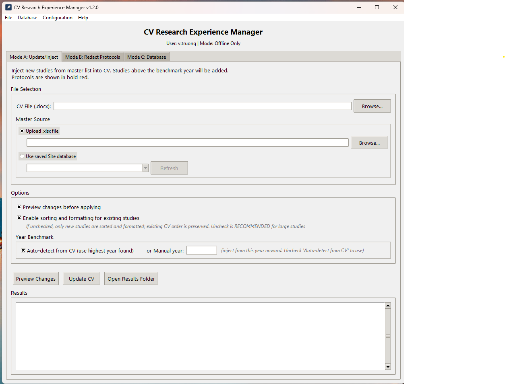
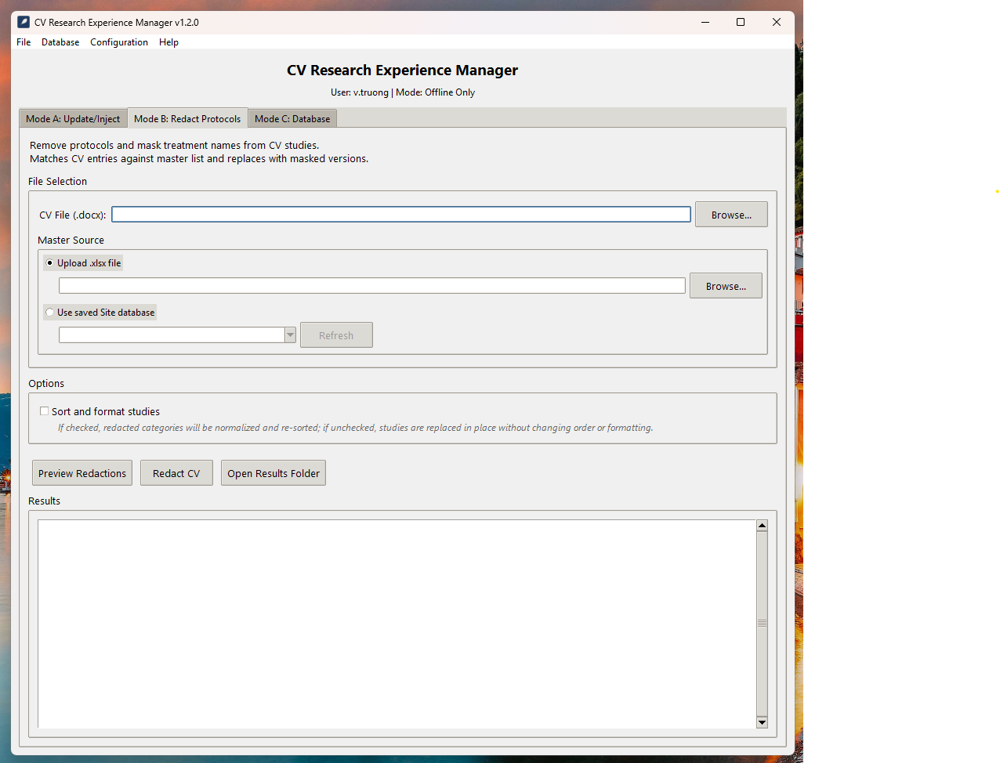
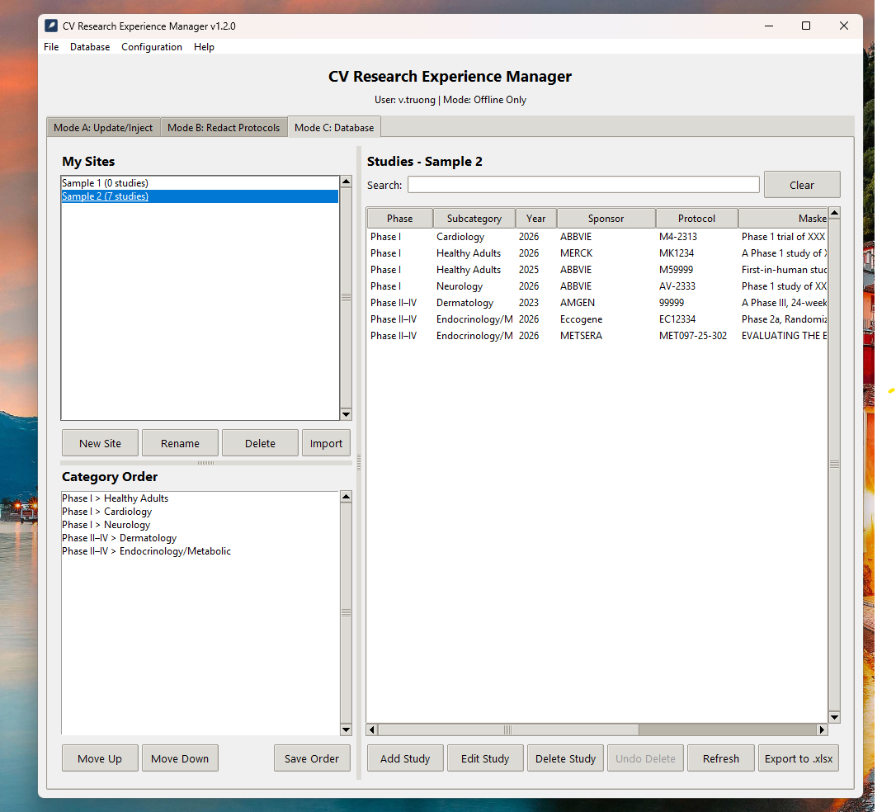
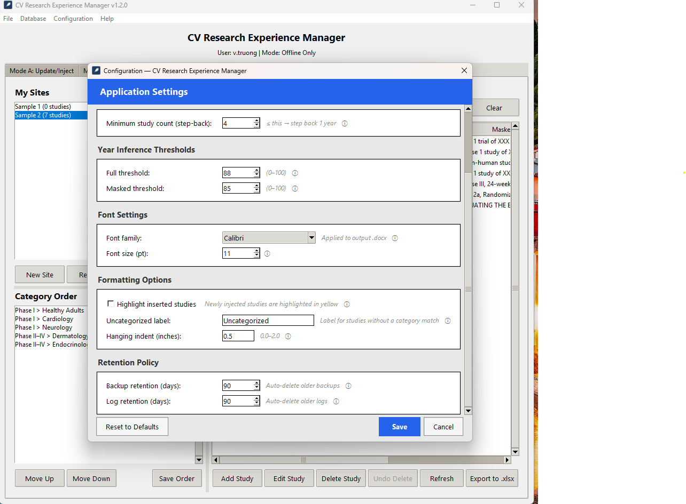

Curriculum Vitae Manager
An offline-only desktop application that automates the management of Research Experience sections in CV documents. It parses Word files, injects new studies from Excel master lists, redacts protocols for blinded submissions, and maintains a local SQLite database — all without ever connecting to the internet.
The Problem
In clinical research organizations, staff CVs must list every study they've worked on — often hundreds of entries organized by clinical trial phase and therapeutic area. Keeping these documents current is a tedious, error-prone process:
- New studies must be manually added in the correct hierarchy and format.
- Protocol numbers and treatment names must be redacted for blinded regulatory submissions.
- Duplicate entries creep in when multiple people update the same document.
- Formatting inconsistencies accumulate over years of manual edits.
Staff could spend hours per CV update, and mistakes in redacted documents could compromise clinical trial integrity.
Solution Overview
Mode A: Update & Inject
- Parses the Research Experience section from any .docx CV
- Compares against a master study list (.xlsx or SQLite database)
- Injects only new studies above a calculated benchmark year
- Prevents duplicates using both exact and fuzzy matching
- Preserves all existing formatting and document structure
Mode B: Redact Protocols
- Identifies protocol-bearing studies using text analysis (not font color)
- Replaces protocol numbers and treatment names with XXX masks
- Operates in-place — no paragraphs added or removed
- Idempotent: already-masked studies are automatically skipped
- Optional re-sorting of affected subcategories only
Mode C: Database Management
- Per-user private SQLite databases with WAL journaling
- Import/export between Excel and database formats
- Full CRUD for phases, subcategories, and studies
- Automatic versioned backups with configurable retention
- Automatic category order maintenance
Architecture Highlights
- 15+ Python modules with clear single-responsibility design
- 460+ automated tests (hermetic, zero external dependencies)
- Offline enforcement: socket blocking and proxy detection at startup
- Packaged as a single .exe via PyInstaller (25 MB)
- Both GUI (tkinter) and CLI interfaces
Tech Stack
Screenshots




Challenges & Solutions
- Preserving Word formatting: Existing paragraph XML elements had to be moved, never recreated, to keep original bold/color/indentation. I built a surgical XML-element reordering system.
- Phase/subcategory matching: Headings like "PHASE I" vs. "Phase 1" vs. "Phase I" needed to match. I implemented Unicode NFC normalization, casefold comparison, and a Roman numeral synonym table.
- Subcategory vs. sponsor detection: Short text lines like "Healthy Adults" could be either. A look-ahead heuristic checks if the next non-empty line starts with a year to disambiguate.
- Offline enforcement: The app handles sensitive data, so I implemented a startup guard that blocks all network sockets and detects proxy environment variables.
- Single-file distribution: PyInstaller packaging required careful hidden-import management for rapidfuzz submodules and docx internals.
Outcomes & Impact
- Reduced CV update time from 30–60 minutes per document to under 2 minutes.
- Eliminated duplicate study entries and formatting inconsistencies.
- 460+ automated tests with zero regressions across 7 major feature additions.
- Packaged as a portable 25 MB .exe — no Python installation required for end users.
- Successfully deployed for daily use in a clinical research setting.
Lessons Learned
- Investing heavily in hermetic tests early made it safe to refactor major subsystems (sort logic, redaction, output routing) without breaking existing behavior.
- Text normalization is deceptively complex — Unicode dashes, smart quotes, and whitespace variants caused the majority of subtle bugs.
- Designing for "offline-only" from day one simplified security decisions but required creative solutions for dependency management and distribution.
Future Improvements
- Multi-document batch processing for sites with dozens of CVs.
- Diff viewer showing exactly what changed between input and output documents.
- Auto-updater for the .exe that checks a local network share (not the internet).
- PDF export alongside the .docx output.